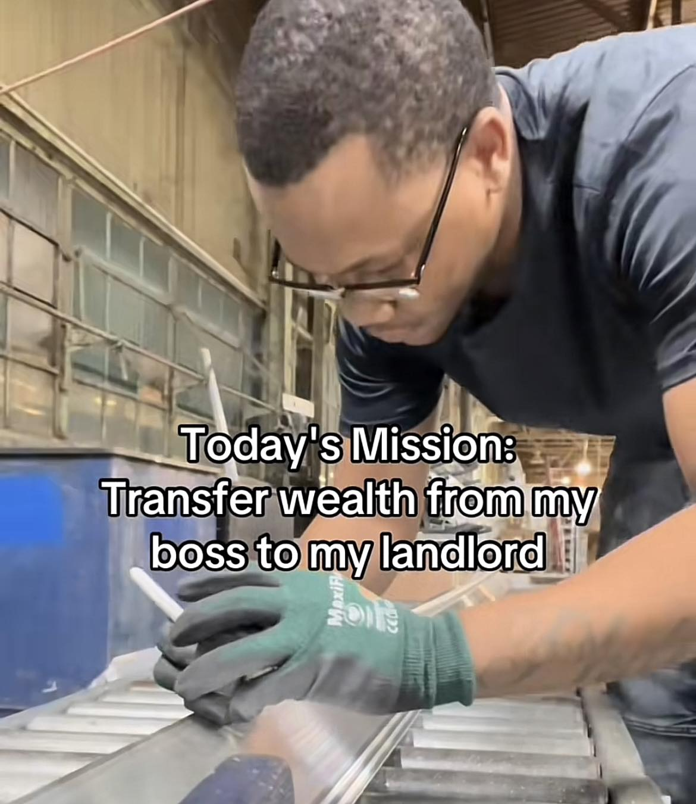

Why are real estate prices a problem?
A yearly income of $124k was required to afford the median house in May 2025, while the median household income was around $80k.

A yearly income of $124k was required to afford the median house in May 2025, while the median household income was around $80k.
Real estate prices are derived from the sum of the property value and the land value.

Since the property value generally depreciates over time due to material wear, and the size of the plot stays the same, then rising real estate prices must be caused by rising location values.
The location value comes from the value of improvements on nearby land. The landowner gains a share in the value of improvements that nearby landowners make to their lands, even though they did not pay for those improvements.
This is great if you're the landowner, you get to watch the value of your land increase, while you don't have to do any work. Improvements to your land value are socialized, while you get to privatize ownership of a share of that value.
When everyone can afford enough land to live on, this system works well for everyone involved. Everyone gets to own a share in the value of the community.
What happens when the land starts to run out?
People no longer are able to afford a plot of land, yet they need a place to live. Thus rent is born.
The rent price comes from a sum of two sources.

Everyone needs a place to live, and will generally pay whatever it costs, since the alternative is homelessness.
Once all the land in a given area has been bought up, rent will keep increasing to match the minimum that people are capable of paying.
When the economy of an area is doing well, workers start to make more money, and so rent rises to match what workers can afford.
The only way to get ahead in this system is to make more money than the average worker, and hope that your landlord doesn't increase your rent fast enough until you can afford your own property.
The landowners soak up the wealth created by the hard work of the workers, largely through no effort of their own. The landowners have an rightful claim to rent derived from building and maintaining the property, but no rightful claim to the rent derived from the location value.
This broken system is only further compounded by the fact that when your average worker sells their land, it is usually sold for a higher price.
So land naturally tends towards being owned by a smaller and smaller group of individuals, who collectively own the wealth produced by the workers, which they have no honest claim to.

Even worse than this compounding trend is the fact that the average worker becomes dependent on that unearned claim to social wealth.
This traps the worker into depending on a system which increasingly takes away his share of social wealth and concentrates it to a smaller and smaller group of people.
Societies built on this kind of system are addicted to privatizing land values, and so are blinded to the solution, in the same way that any drug addict is blind to or actively ignores solutions to their addiction.
Through this blindness, only solutions which manage the problem are politicially viable, while curing the underlying disease is almost never taken seriously.
Take now ... some hard-headed business man, who has no theories, but knows how to make money. Say to him: "Here is a little village; in ten years it will be a great city—in ten years the railroad will have taken the place of the stage coach, the electric light of the candle; it will abound with all the machinery and improvements that so enormously multiply the effective power of labor. Will in ten years, interest be any higher?"
He will tell you, "No!"
"Will the wages of common labor be any higher; will it be easier for a man who has nothing but his labor to make an independent living?"
He will tell you, "No; the wages of common labor will not be any higher; on the contrary, all the chances are that they will be lower; it will not be easier for the mere laborer to make an independent living; the chances are that it will be harder."
"What, then, will be higher?"
"Rent, the value of land. Go, get yourself a piece of ground, and hold possession."
And if, under such circumstances, you take his advice, you need do nothing more. You may sit down and smoke your pipe; you may lie around like the lazzaroni of Naples or the leperos of Mexico; you may go up in a balloon or down a hole in the ground; and without doing one stroke of work, without adding one iota of wealth to the community, in ten years you will be rich! In the new city you may have a luxurious mansion, but among its public buildings will be an almshouse.
- Henry George, Progess and Poverty
Left leaning solutions propose to solve this problem through high taxes, creating strong worker regulations, and using that wealth to create a robust social safety net.
These solutions try to use the government to force the ideal vision of society, rather than by changing the underlying incentives which are killing society.
These solutions are doomed to fail, because no matter how high taxes are, or how strong worker regulations are, or how strong the social safety nets are, land rents will continue to be privatized.
Both the workers and the businesses will slowly have more and more of their wealth they create captured by landowners and the government, until businesses are no longer profitable.
Once the businesses are unprofitable, workers will lose their incomes, sell their property to live, which will only make the problem worse in the long run.
Solutions further to the left will try to have the government centrally manage everything, including ownership of land. However, without a free market, subjective value cannot be determined, and so businesses will collapse.
Occasionally, wealth taxes will be proposed as a solution, which may involve taxing land, but they tend not to tax land to the necessary degree, and instead institute taxes which cause large deadweight loss.
Right leaning solutions propose to free up businesses by removing regulations, thereby increasing the amount of wealth which can be put to efficient use by businesses and workers.
However, that wealth will too be captured by land values, and society will eventually become dependent on having minimal worker protections and business regulations.
Solutions further to the right will propose things like restricting who can work. These solutions are doomed to fail because even if the supply of workers decreases and the wage of the average worker increases, rents will rise to match those wages.
This is how far right societies can get absurd ideas like removing women from the workforce. Once women were able to work, incomes increased, but so did rents. Now, both men and women have to work to afford a place to live.
Far right views can see the problem, but misattribute the problem to certain groups of people, and not private ownership of land values.
Centrist solutions generally try to take on government debt to stimulate the economy, particularly by building out infrastructure.
These solutions, like the others, may help in the short term. However, the wealth created will increase land values, which will get soaked up by the landowners.
The government will take out a loan from people/companies/nations which increases land values. These loans (bonds) are usually sold to the wealthiest, who are also the landowners.
Now, the landowners get paid twice. Both from interest on the bond (which is paid by the taxpayers), and on the rising land values.
If the government can't afford to pay back the bondholders through taxes, then they may sell off assets, including land, likely to the very same wealthy landowners.
How fortunate for the landowners!
The rental value of land, as opposed to the rental value of property, should be owned by who creates that value - the people of the community.
By taxing the rental value of land at 100%, landowners are no longer incentivized to buy land purely for rent seeking and land speculation.
In order to make money from land, the landowner will have to do something productive with that land.
In a general sense, whatever is taxed, society has less of. Whatever is subsidized, society has more of. Taxing the unimproved value of land results in less unimproved land.
Extreme ownership of land values is how there can be cities of great wealth, but huge amounts of homelessness and vacant buildings.
Instead of that land being put to good use, the landowners are waiting to sell the land to someone at a higher price, or charge an exorbitant rent.
So any city which has private ownership of land values will end up with extreme poverty and underutilized land, until it becomes unlivable and people move away.
The land rents can be distributed back to the community in the form of a dividend. Every month, every resident gets a check of their share of the communal land value.
This solves the worst of the entitlement crisis, and also solves the worst of the issues around workers rights.
The dividend can pay for basic needs, and businesses will have to provide incentives that people are willing to work for.
In addition to solving these issues, land value taxes will also reduce the cost of the present entitlements, which are strangling governments with huge debts.
They will fix these costs by removing the incentives for rent seeking and land speculation which are a disaster for the economy.
Similar to energy costs, when housing goes up, everything costs more, because all citizens need to afford a place to live, and so workers have to somehow make a livable wage.
With rent seeking and land speculation removed, people are now free to build far more housing than before, due to the strangling of the land being removed.
This will drive down rent prices, reducing the cost of everything, while improving the purchasing power of the workers.
Modern surveying methods do a good job of this (insert link here).
Even though your local tax assessment might say that your land value is low and your property value is high, your property has been increasing in value due to rising land values, not rising property values.
Once land value taxes are in place, local governments will be incentivized to correct these assessments.
There is a kind of market effect in determining how much to tax land values. If land values taxes are too low, land is underutilized due to rent seeking by private individuals. If land value taxes are too high, land is underutilized due to an equivalent form of rent seeking by the local government.
When land value taxes are tuned correctly, revenue from the tax, and therefore the monthly dividend, is maximized. Counties can compete with each other to find what the best ways of assessing land values are.
No. It will do the exact opposite. Land value taxes have no deadweight loss. In fact, land value taxes incentivize growth by removing the equivalent deadweight loss brought on by rent seeking and land speculation.
The reason it has no deadweight loss is because land isn't created, and so taxing is doesn't change how much of it exists.
Generally not, landlords can still make money off of providing an honest service. Slumlords will be put out of business, because they can no longer live off of the land values.
Generally not, in many cases, the dividend will be enough to cover the land value taxes. At the very least, it will be enough to afford a place to live in a less in-demand area, so grandma won't go homeless.
There's already a huge homelessness problem, land value taxes will take away the danger of homelessness to anyone who is capable of taking care of themselves.
If someone does have a plot of land in a highly valuable area, then it will have to be put to good use or sold to someone who can put it to good use. That's the price which is paid for land value taxes, which is an enormously smaller price than what we currently pay.
The first rule of economics is that there are no solutions - only tradeoffs.
The first rule of politics is to ignore the first rule of economics.
- Thomas Sowell
Even though a farmer's land might have a huge market value, the rental value of that land will be quite low. If a farmer can only make $50k/year on the land, then they might only be willing to pay a few thousand a year if they were to lease the land from someone else.
No, companies will still make money off of their efforts to find resources. They will make money off of the production and sale of those resources.
To incentivize this further, an increasing land value tax can be placed on new resources or patents that increases overtime.
This ensures that companies can still make a profit strictly off of exploration and research, but also will eventually cause the value of that land to be communally owned.
People will still own their capital investments, and can make passive income off of that. There's no issue with that passive income, because it was derived from their own wealth, rather than the wealth of the community.
It's the addiction to using housing as an investment/retirement vehicle which got us into this mess. For the sake of ourselves and our descendents, we should break ourselves out of this addiction.
As a sidenote, I find it somewhat ironic that the people who would advocate the most for policies which cause short term pain for long term benefit, now vehemently object to a mild amount of short term pain for enormous long term benefits.